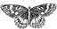

[(#LANG|afficher_nom_langue)]
documentation de référence
(<:icone_articles:>: #TOTAL_BOUCLE)
[(#COMPTEUR_BOUCLE|alterner{
,'','','',''})]
[(#LANG|afficher_nom_langue)]
[
(<:icone_articles:>: (#TOTAL_BOUCLE))
]
[(#LOGO_RUBRIQUE|#URL_RUBRIQUE)]
#TITRE
#DESCRIPTIF
#NOM_SITE_SPIP #URL_SITE_SPIP/
Accès des rédacteurs
<:squelette:> 